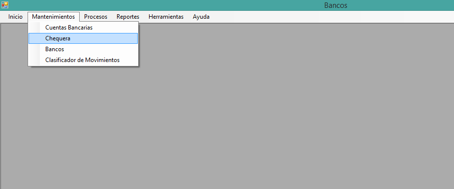
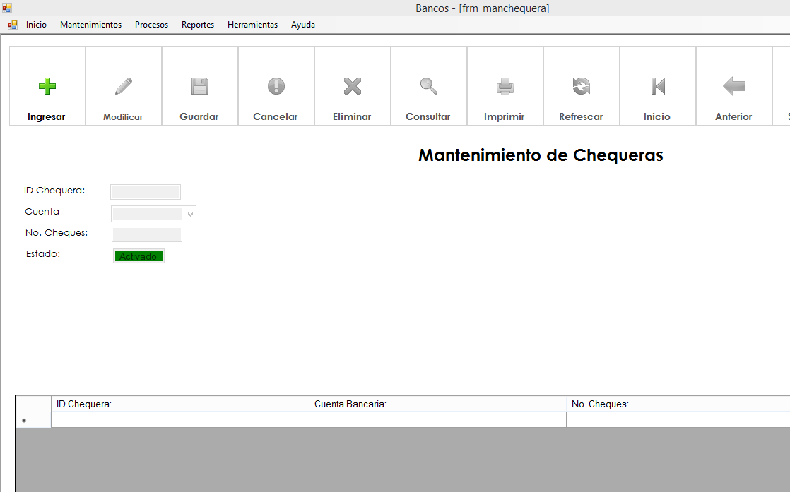
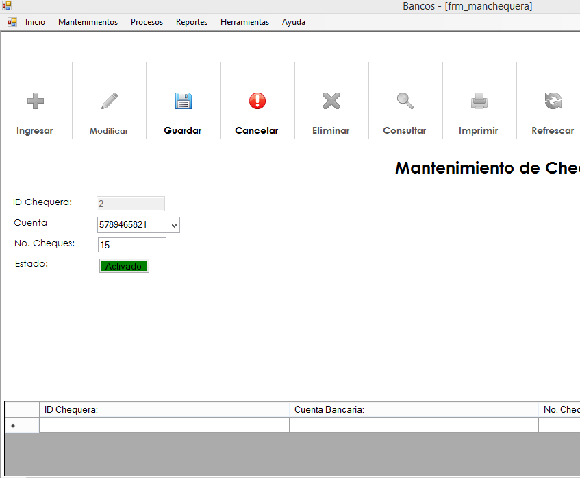
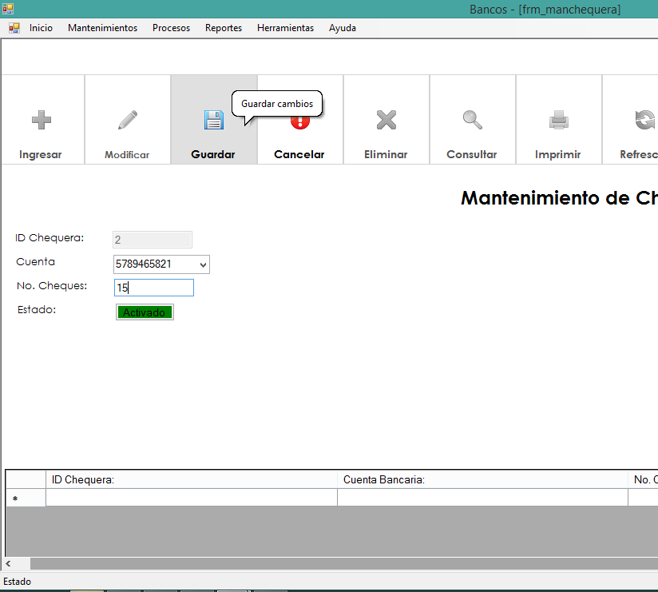

Al abrir la ventana principal de Bancos(donde se muestran todas las ventanas), usted podrá observar la barra de menú en la parte superior de ésta:
Damos click en Mantenimiento y luego en Chequeras

Formulario para los mantenimientos de Chequeras
Damos click en el boton Ingresar y nos habilitara las cajas de texto
Por ultimo le damos click en guardar y aparecera el registro en la tabla
